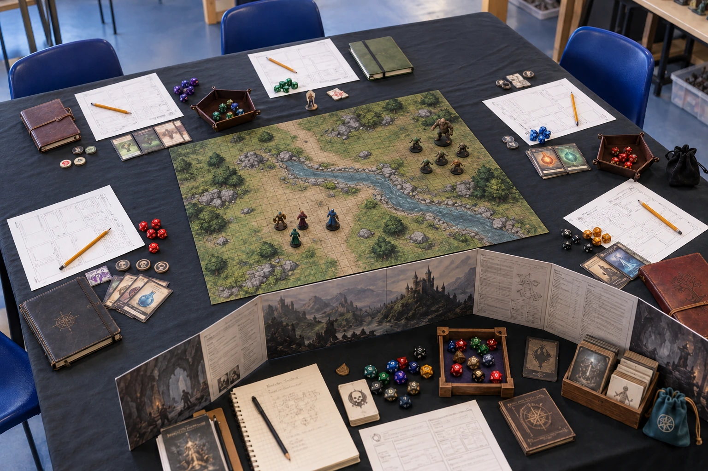
🎲 Jeux de rôle
Incarnez des personnages, explorez des mondes et partagez des campagnes guidées par des maîtres de jeu.
Des dés, des légendes, des stratégies et des mondes à explorer.
Jeux de rôle · Jeux de société · Cartes · Figurines · Peinture
L’Antre de la Manticore est une association de passionnés de jeux située à Ancenis-Saint-Géréon. Nous nous retrouvons autour du jeu de rôle, des jeux de société, des jeux de figurines et des jeux de cartes. Débutants comme joueurs expérimentés sont les bienvenus ! Venez nous rencontrer un dimanche et faire connaissance avec les membres.
ConvivialitéPartageDécouverteTous niveaux
Incarnez des personnages, explorez des mondes et partagez des campagnes guidées par des maîtres de jeu.
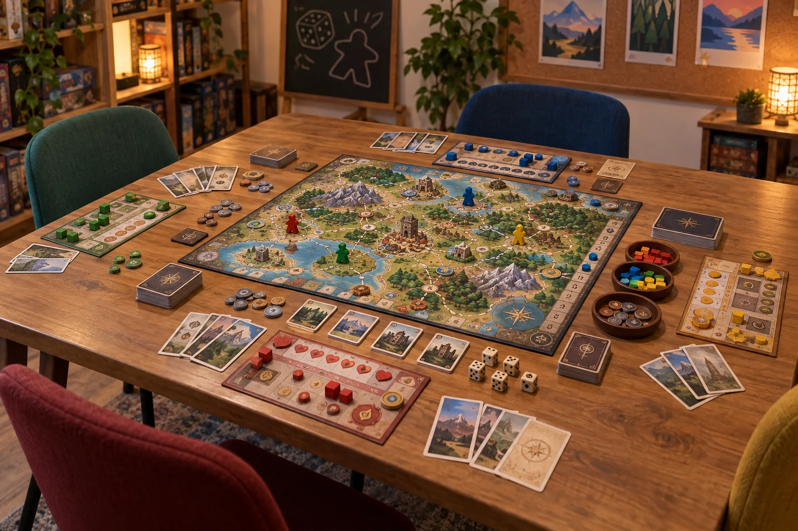
Jeux de stratégie, de coopération, d'ambiance et de découverte : le plaisir de jouer ensemble.
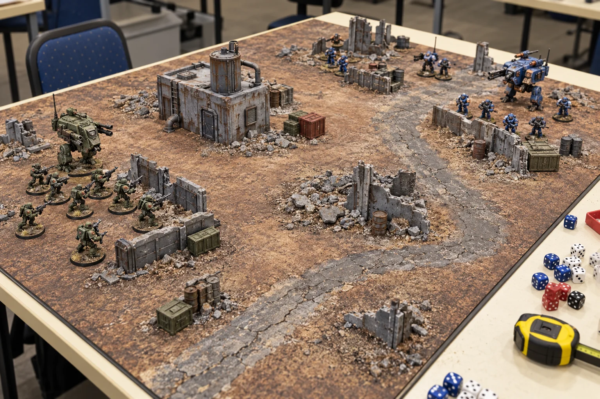
Warhammer, Kill Team et autres jeux de figurines : tactique, affrontements et décors.
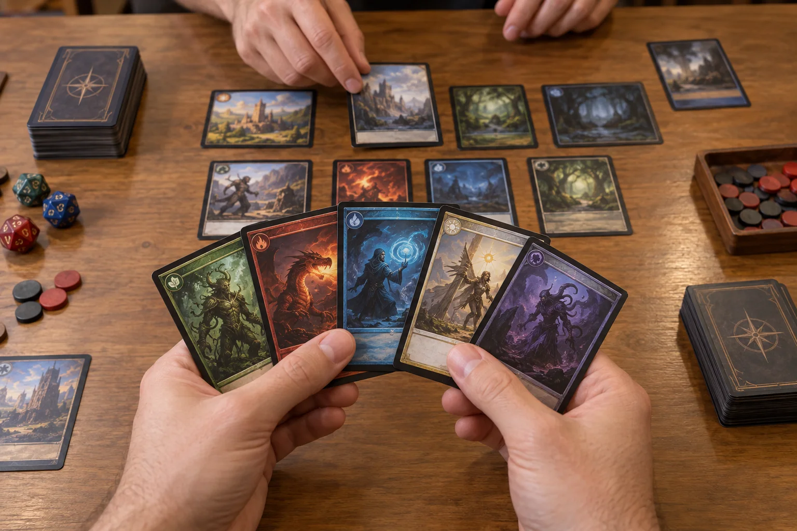
Construisez vos stratégies, découvrez de nouveaux jeux et retrouvez d'autres passionnés.
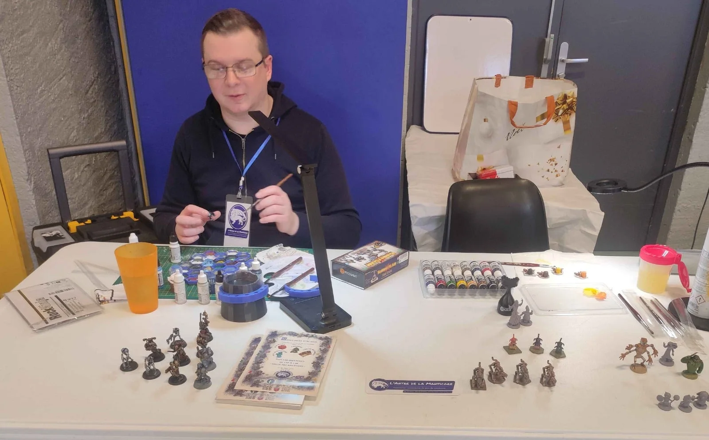
Assembler, peindre et personnaliser ses figurines, créer des décors et partager des techniques : chaque miniature raconte une histoire.
Débutants curieux et peintres confirmés peuvent échanger autour de cette passion.
Découvrir l'associationPour les jeux de rôle et la découverte de l’association, retrouvez-nous chaque dimanche de 14 h à 19 h aux Abattoirs. Les jeux de société et Kill Team se retrouvent également à la salle de la Corderie, le premier samedi de chaque mois, de 20 h à minuit. L’association participe également à des animations et organise des rencontres tout au long de l’année ; les dates des événements particuliers sont communiquées séparément.
Jeux de rôle, découvertes et aventures en groupe.
Parties de Warhammer, Kill Team et autres jeux.
Peinture, jeux de cartes, jeux de société et moments conviviaux.
Découvrez les propositions présentées pour la saison 2026–2027. Les places indiquées proviennent des présentations initiales et ne constituent pas une disponibilité en temps réel.
Figurines, montage, peinture et escarmouches. Public mature uniquement.
8 places annoncées · rythme mensuelHonneur, loyauté et intrigues dans l’univers de Rokugan.
5 places annoncées · scénariosUne découverte progressive du Monde des Ténèbres, entre enquête et surnaturel.
5 places annoncées · adultesUne première mission royale dans un monde ouvert d’aventures.
5 places annoncées · mineurs acceptésUn voyage vers la Fête de la Lune, où chaque décision compte.
5 places annoncées · adultesSurvivre et explorer les Terres désolées après l’apocalypse.
4 à 5 places annoncées · adultesLes photos de nos rencontres et de nos parties, au cœur de la vie de l’association.
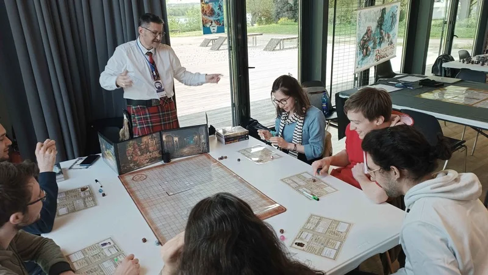
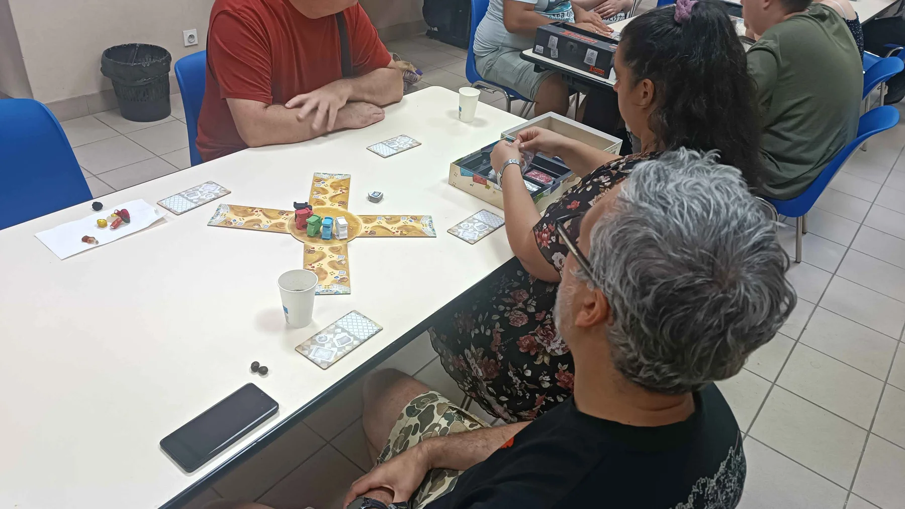
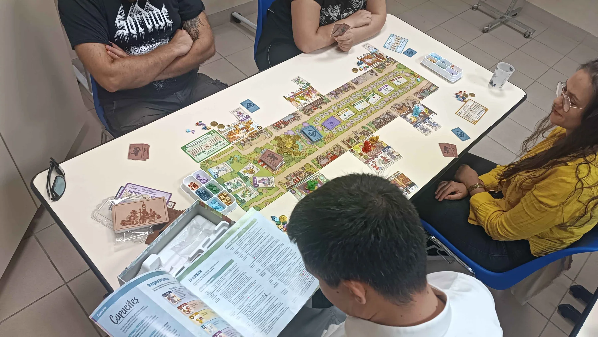
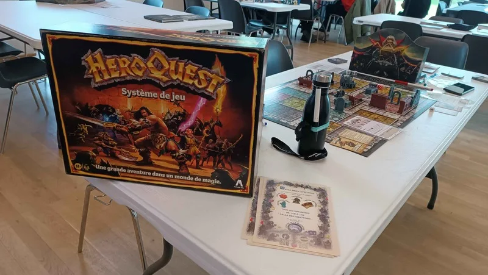
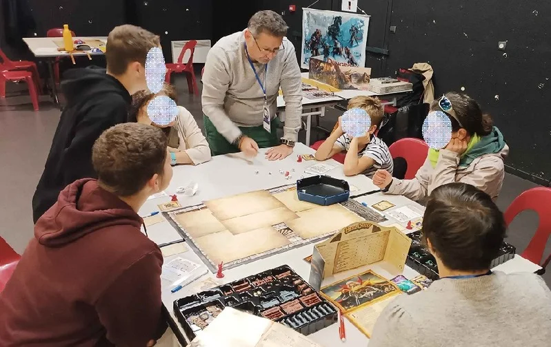
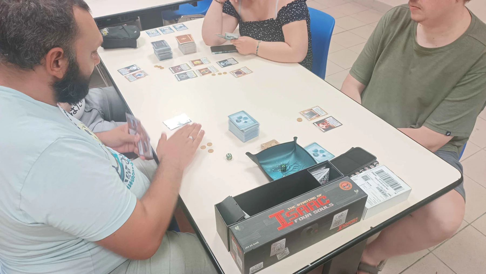
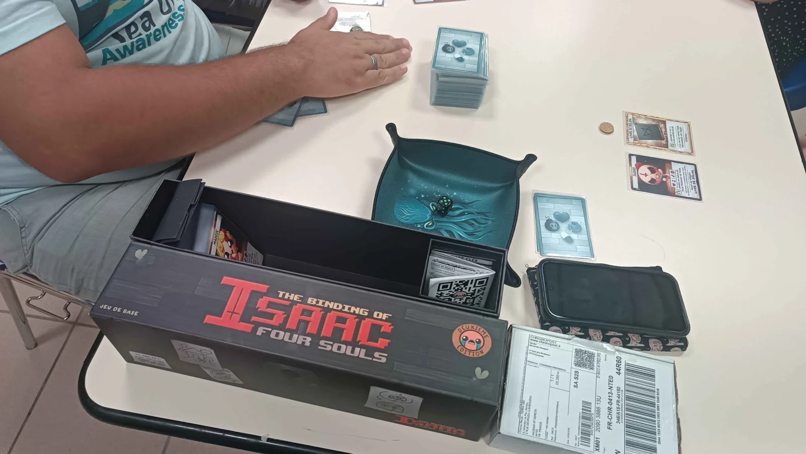
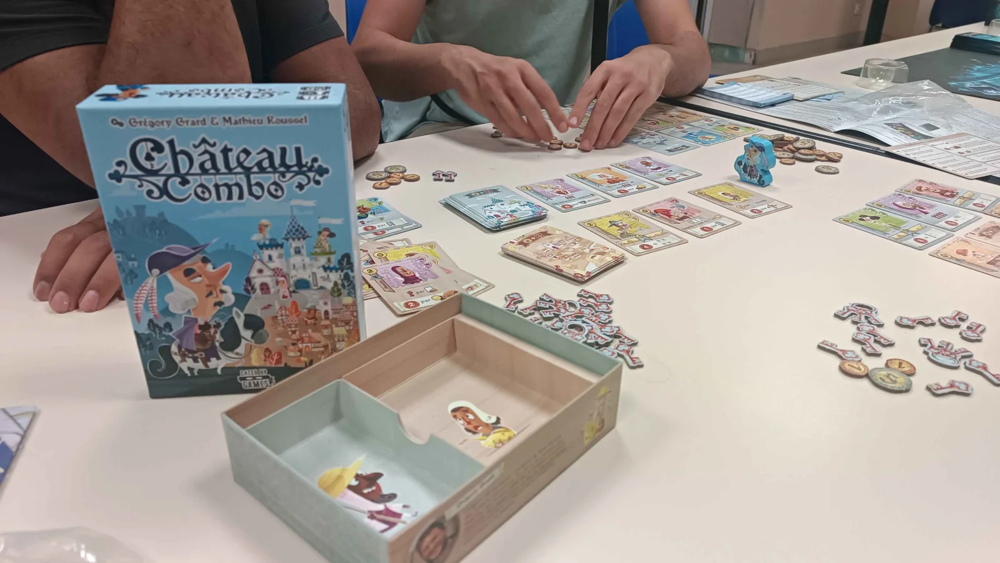
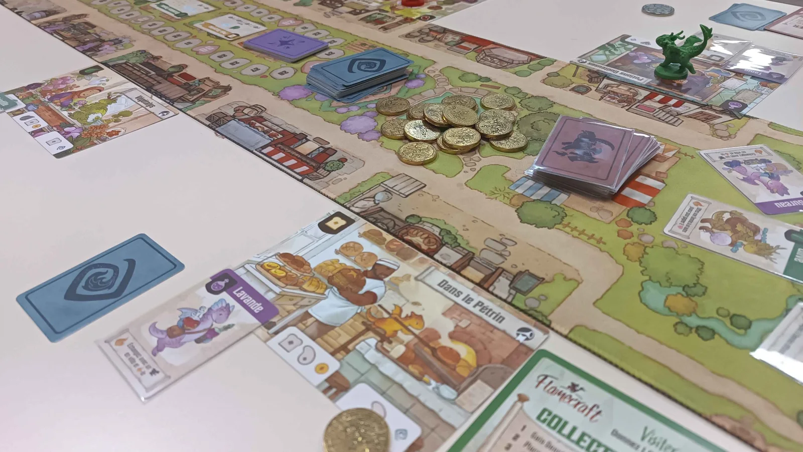
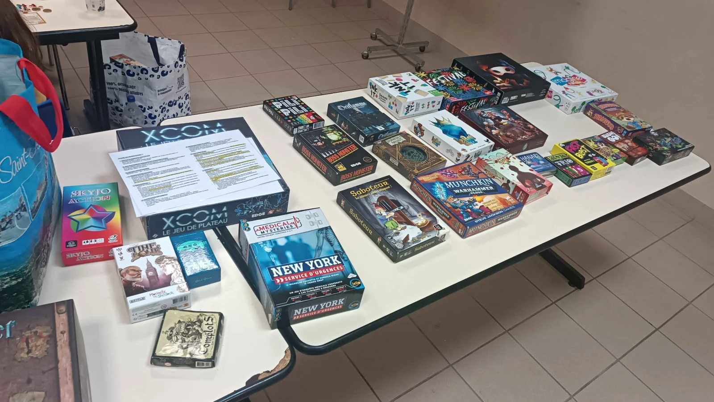
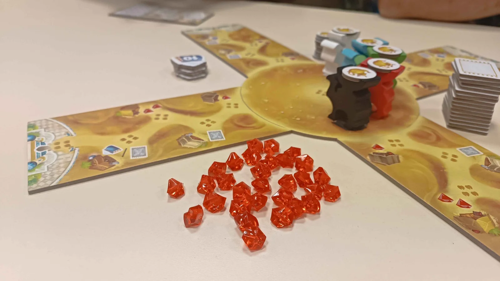
L’Antre de la Manticore se retrouve aussi lors d’animations, festivals et soirées de jeux.
Les Arcades, boulevard du Dr Moutel, 44150 Ancenis.
Rencontres autour du jeu, selon les événements annoncés.
D751, Base nautique, 49410 Notre-Dame-du-Marillais.
Des moments de jeu et de convivialité lors d’événements ponctuels.
Découvrez les photos des participations de l’association aux fêtes du jeu et aux animations locales dans notre galerie.
Ces lieux sont des exemples de rencontres et d’animations passées, pas des permanences hebdomadaires. Les prochaines dates sont à confirmer auprès de l’association.
Tous les dimanches · 14 h à 19 h
Salles des Abattoirs
72 rue Saint-Fiacre
44150 Ancenis-Saint-Géréon
Venez découvrir l’association et participer à nos aventures JDR.
Premier samedi de chaque mois · 20 h à minuit (00 h 00)
Salle de la Corderie
63 rue Alexis Carrel
44150 Ancenis
Soirées jeux de société et parties de Kill Team.
Venez découvrir l’association et participer à nos activités, notamment les jeux de rôle le dimanche aux Abattoirs. Pour les jeux de société et Kill Team, rendez-vous à la Corderie le premier samedi de chaque mois, de 20 h à minuit.
Les Abattoirs
72 rue Saint-Fiacre
44150 Ancenis-Saint-Géréon
Tous les dimanches
de 14 h à 19 h
Deux grands parkings en centre-ville.
Gare ferroviaire à 15 minutes à pied.
Une première découverte gratuite, sans obligation d’adhérer dès votre première visite.
10 € par an
Venez découvrir l’association et, si elle vous plaît, vous pourrez adhérer ensuite.
L’association accueille les joueurs à partir de 12 ans. Venez rencontrer les membres et découvrir les activités avant de décider d’adhérer.
L’adhésion se fait sur place. Un formulaire vous sera remis pour finaliser votre adhésion. Vous recevrez ensuite votre carte d’adhérent.
La carte d’adhérent peut donner accès à des avantages négociés par l’association : réductions chez certains magasins, offres partenaires ou autres avantages. Les offres évoluent selon les partenariats en cours ; renseignez-vous auprès de l’association pour connaître les avantages disponibles.